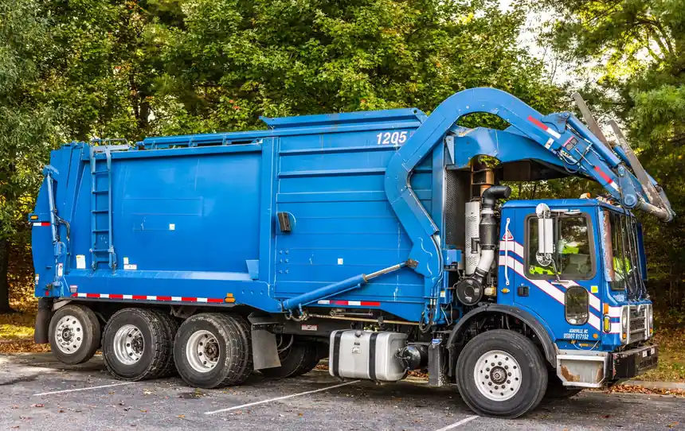

Pipe Repair and Replacement Arlington Heights IL Done Right
When a pipe lets go, you need pipe repair and replacement Arlington Heights IL homeowners actually trust. We handle burst pipe repair, copper pipe repair, and full water pipe replacement across Cook County, from Miner Street to Scarsdale. Same-day service, upfront pricing, and a clean, code-correct fix that holds. Call (224) 643-9856.
Every job starts with a real diagnosis and ends with a pressure test. Here is what is covered when you book pipe repair and replacement Arlington Heights IL with us.
Full Leak Diagnosis
We inspect the line with leak detection equipment and a pressure gauge, and we camera buried or hidden runs. You get a plain explanation of what failed and where, not a guess.
Section Repair or Full Replacement
We cut out the failed section and replace it with matched copper, PEX, PVC, or ABS pipe. If the run is failing in multiple spots, we quote a full replacement and show you why.
New Fittings and Valves
Repairs include new fittings, solder or crimp connections, Teflon tape, and a replacement shut-off valve where the old one is seized or corroded. We do not reuse failing parts.
Pressure Test and Verification
Before we close anything up, we pressurize the line and watch the gauge. No drop, no weep. You see the test result before we call the job done.
Site Protection and Cleanup
We lay floor protection, contain dust, and haul away old pipe and debris. Your space is left ready for drywall or flooring, not covered in metal shavings and water.
Written Summary of Work
You get a record of what was repaired or replaced, the pipe material used, and the condition of the rest of the run, so you know what to watch and when to plan the next step.
Homes and businesses.
The approach is the same for a home and a business. What changes is the access, the schedule and who needs the paperwork.

For Homes
We repair and replace supply and drain lines in houses, condos, and apartments across Arlington Heights. You get a clear explanation and a pressure-tested fix before we leave.
Burst pipe in basement
Frozen line in garage wall
Pinhole leak in copper
For Businesses
We handle pipe repairs for restaurants, retail, and offices in Arlington Heights. We schedule around your hours and document the work for property owners.
Supply line above retail ceiling
Restroom pipe failure
After-hours emergency repair
Pipe Repair and Replacement Arlington Heights IL
A plain-language look at what Pipe Repair and Replacement involves and when it is needed.
Pipe repair and replacement Arlington Heights IL is the trade of restoring damaged or failing water lines so your home holds pressure and stays dry. We cut out the failed section, match the material, and either repair the run or replace it end to end. That means copper pipe, PEX tubing, PVC pipe, and ABS pipe, plus the fittings, shut-off valves, and supply lines that connect them. A proper fix restores full flow and stops the leak at the source, not just at the stain on your ceiling.
Most calls we run in Arlington Heights start the same way: a puddle near the water heater, low water pressure upstairs, or a burst pipe behind a finished wall. Older homes near Old Arlington Heights and Heritage Park still carry original copper, and decades of hard water leave pinholes that spray fine mist before they fail completely. If you are searching for pipe repair near me Arlington Heights IL at 2 a.m., we answer, isolate the line, and get water back on the same visit.
A pipe repair is only as good as the pressure test that follows it.
What it is
Repairing or replacing damaged water supply or drain pipe to restore flow and stop leaks.
When you need it
Burst pipe, pinhole leak, frozen split, low pressure, or visible water damage.
What to expect
Diagnosis, repair or replacement, pressure test, and cleanup before we leave.
How Our Pipe Repair Process Works
No mystery, no waiting around. Here is exactly what happens from your first call to the final pressure test.
Call and Triage
You call (224) 643-9856 and describe what you see: where the water is, how fast it is coming, and whether you can shut the main. We walk you through shutting off the supply if you have not already, then dispatch a technician with the right parts for copper, PEX, or PVC.
Call
Triage
Dispatch
On-Site Diagnosis
We inspect the line with leak detection equipment and a pressure gauge, and if the run is buried or behind a wall we bring in a sewer camera to see the failure. You get a plain explanation of what failed and why, plus the repair and replacement options with pricing.
Inspect
Diagnose
Quote
Repair or Replace
For a contained failure we cut out the bad section with a pipe cutter and sweat or crimp in a new piece. For a run that is failing in multiple spots, we replace the whole line. Most section repairs take two to four hours; a full water pipe replacement Arlington Heights IL job runs one to two days.
Cut
Repair
Replace
Pressure Test and Restore
Before anything gets closed up, we pressurize the line and watch the gauge. No drop, no weep, no pinhole mist. Then we restore the wall or floor opening, clean the work area, and walk you through what we did and what to watch for.
Pressure test
Restore
Clean up
Follow-Up and Prevention
We note the pipe material and condition of the rest of the run so you know what is coming. If freezing is the risk, we talk insulation and shut-off habits. If hard water is eating your copper, we can quote a water softener before the next pinhole opens up.
Document
Advise
Prevent
Tools and Methods We Use
Move across a circle, or focus it and press Enter, for an illustrative thermal view of the photograph.
Pipe cutter and tube cutter
Clean, square cuts on copper and PEX so fittings seat properly and the joint does not weep under pressure.
Soldering torch and PEX crimping tool
We sweat copper joints and crimp PEX rings to manufacturer spec, then pressure-test every connection before closing the wall.
Leak detection equipment and pressure gauge
We pinpoint hidden leaks and measure line pressure before and after repair, so you see the fix worked, not just hear it.
Sewer camera
We inspect buried and hidden pipe runs for cracks, root intrusion, and bellies before we recommend a repair or replacement.
RIDGID and Milwaukee tools
Our trucks carry RIDGID and Milwaukee cordless tools for cutting, crimping, and diagnostic work in tight spaces.
Thermal views are illustrative, generated from the photographs.
Methods
Hydro jetter and drain snake
We clear scale and debris from drain and sewer lines, then camera the pipe to confirm it is clean and intact.
Illinois Plumbing Code compliance
Every repair and replacement meets Illinois plumbing code, including proper pipe sizing, support spacing, and backflow protection. We pull permits where required and coordinate inspection so your job passes the first time.
Pressure testing before close-up
We pressurize the repaired line and watch the gauge for a set period. No pressure drop means no hidden weep. We do this before drywall, flooring, or insulation goes back, so you are not paying twice.
Material matching
Correct material matching prevents galvanic corrosion and premature joint failure.
Lead-safe work practices
That protects your family and keeps the job compliant.
When Arlington Heights Homeowners Call Us
Burst in Scarsdale
A pipe bursts behind a finished basement wall in Scarsdale on a Sunday night.
We answer, walk you through shutting the main, and dispatch a technician with copper and PEX on the truck. We open the wall, cut out the split, and repair the line the same visit.
Outcome: Water is stopped, the line is pressure-tested, and you are back to normal without waiting until Monday.
Pinholes in Heritage Park
Copper pipes in a 1960s home near Heritage Park start pinhole leaking every few months.
We inspect the full run, document the corrosion, and quote a partial repipe with PEX or new copper. We replace the worst sections first if you want to phase the work.
Outcome: Pinhole leaks stop, pressure stabilizes, and you stop calling a plumber every season.
Holiday supply failure
A supply line to the water heater fails the day before a holiday gathering.
We isolate the line, replace the corroded nipple and supply pipe, and check the shut-off valve. If the water heater is also failing, we quote that separately so you can decide.
Outcome: Hot water is back, the floor is dry, and your holiday plans are not derailed.
Commercial leak
A commercial tenant in the Arlington Heights Business District reports a leaking pipe above a retail ceiling.
We schedule around store hours, repair the pipe, and pressure-test before the store opens. We document the work and the pipe condition for the property owner.
Outcome: The tenant stays open, the leak is fixed, and the owner has a record for the next budget cycle.
Frozen garage line
A frozen pipe in a garage wall splits during a January cold snap.
We thaw the line, cut out the split, and replace it with PEX that handles freeze expansion better. We insulate the wall cavity and check the rest of the run for damage.
Outcome: Water is restored, the wall is protected, and the same pipe does not freeze again next winter.
Old Arlington HeightsScarsdaleLake Arlington
How Pipe Repair Runs in Arlington Heights
Arlington Heights sits in Cook County, and our pipe work here reflects the local building stock and climate. The village has a mix of post-war ranches, 1960s split-levels, and newer construction, and each era brings its own pipe problems.
Older homes near Old Arlington Heights and Heritage Park often still have original copper with decades of scale buildup, while newer builds may have PEX or PVC that fails at fittings rather than mid-run. Winters here push temps below 20 degrees, and that is when frozen pipe repair Arlington Heights 60004 calls spike, especially in homes with pipes running through unheated garages, crawlspaces, or exterior walls.
We also see slab leaks in homes built on grade, and root intrusion in sewer and supply trenches near mature trees. If you need water pipe replacement Arlington Heights IL, we plan the route to minimize wall and floor damage, and we work with the village on permits when the job requires it. Our trucks carry copper, PEX, PVC, and ABS so we can match your home and finish the repair in one visit whenever possible.
Old Arlington Heights: Many homes here have original copper with 40-plus years of scale. We inspect for pinholes and thinning walls before recommending a repair or repipe.
Scarsdale: A mix of 1950s and 1960s homes with pipes in exterior walls. Frozen line calls are common here in January and February.
Lake Arlington: Homes near the lake deal with higher soil moisture and occasional slab leaks. We use leak detection equipment to pinpoint the source without tearing up floors.
Arlington Heights Business District: Commercial buildings here need pipe repairs scheduled around business hours. We work early mornings and after close to keep tenants open.
Heritage Park: Post-war housing with aging copper and galvanized remnants. We often find mixed materials that need careful matching to avoid corrosion.
Winter temps dropping below 20 degrees: Pipes in unheated garages, crawlspaces, and exterior walls freeze and split. We see a spike in burst pipe calls from December through February and prioritize emergency response.
IllustrativeThe thermal view is generated from the photograph. It is not a measurement. Drag the handle, or use the arrow keys once it is focused.
Burst Copper Line in Scarsdale Basement
Before: A supply line behind the finished basement ceiling split during a January cold snap. Water soaked insulation and drywall before the homeowner shut the main. The copper showed freeze expansion and a 4-inch split.
After: We cut out the failed section, replaced it with new copper, and pressure-tested the line at 80 psi for 30 minutes with no drop. The wall was opened, repaired, and left ready for drywall. Total job time was under four hours.
We insulated the wall cavity and recommended leaving cabinet doors open during cold snaps. An annual pressure check catches thinning copper before it splits.
Pinhole Leaks in Heritage Park Copper Run
Before: A 1965 home had three pinhole leaks in five years, each repaired by a different company. Pressure was dropping at upstairs fixtures, and the homeowner was tired of patching. The copper showed widespread internal scaling.
After: We replaced 40 feet of failing copper with PEX tubing, matched the existing runs at both ends, and pressure-tested the new section. Water pressure at the upstairs shower returned to normal, and no leaks have appeared since.
We installed a water softener to reduce scale and extend the life of the remaining copper. A camera inspection every two years keeps an eye on the rest of the run.
Frozen PEX Line in Northgate Garage Wall
Before: A PEX line running through an unheated garage wall froze and split during a cold snap. The homeowner noticed water running down the driveway and shut the main. The split was near a fitting that had already been repaired once.
After: We cut out the split section, replaced it with new PEX and a new crimp fitting, and rerouted the line 6 inches deeper into the heated wall cavity. We insulated the run and pressure-tested before closing the wall. The line has not frozen since.
We recommended keeping the garage above freezing during cold snaps and adding pipe insulation to any exposed runs. A quick visual check each fall catches trouble early.
Pipe Problems We Solve in Arlington Heights
Most pipe failures announce themselves before they flood the basement. Here are the problems we fix every week across Arlington Heights and Cook County.
Burst pipeBurst pipe flooding a basement or crawlspaceWater reaches drywall, insulation, and stored belongings within minutes, and mold can start within 24 to 48 hours if the space stays damp. We shut the main, isolate the split, and cut out the failed section. Most burst pipe repair Arlington Heights IL jobs are done the same day with copper or PEX, followed by a pressure test to confirm the line holds.
Pinhole leaksPinhole leaks in aging copper pipeA pinhole sprays a fine mist that soaks framing and insulation long before you see a puddle. By the time it shows, you may be looking at rot and a bigger repair. We locate the pinhole with leak detection equipment, repair the section, and inspect the rest of the copper run for thinning. If multiple pinholes are present, we quote a partial or full repipe with PEX or new copper.
Frozen pipesFrozen pipes that split during a cold snapA frozen line blocks flow, and the expanding ice splits the pipe. When it thaws, water pours out fast and can run for hours before you notice. We thaw the line safely, check for splits, and repair or replace any damaged section. We also insulate or reroute exposed runs so frozen pipe repair Arlington Heights 60004 calls do not become an annual event.
Low pressureLow water pressure from corroded or scaled pipeScale and corrosion narrow the pipe from the inside, so fixtures dribble and appliances take forever to fill. It also stresses the pipe and speeds up failure. We measure pressure at multiple points, camera the line if needed, and identify whether the restriction is in the pipe, a valve, or a fixture. Then we repair or replace the affected section and test flow after.
Slab leaksSlab leaks under a concrete floorA slab leak wastes water, drives up your bill, and can undermine the slab or warp flooring. It is also hard to find without the right equipment. We use leak detection equipment and pressure testing to pinpoint the leak without breaking up the whole floor. Then we repair or reroute the line, often through the attic or walls, and restore the slab opening.
Why Arlington Heights Homeowners Call Us
A pressure-tested pipe repair that holds and protects your home.
Same-Day Emergency Response
Burst and frozen lines do not wait for business hours. We run emergency calls across Arlington Heights and aim to have a technician at your door the same day, often within a few hours. We isolate the leak, shut the water down, and stabilize the line before we quote the permanent fix.
Copper and PEX Expertise
We repair and replace copper pipe, PEX tubing, PVC pipe, and ABS pipe, and we match the material to your home and your water. Copper pipe repair Arlington Heights calls get the same care as a full repipe: correct fittings, proper solder or crimp, and a pressure test before we close the wall.
Upfront Pricing, No Surprises
You get a clear number before we start. Affordable pipe replacement in Arlington Heights, Illinois starts with honest diagnosis, not a sales pitch. If the whole run is failing, we show you why and price the replacement.
Code-Correct Work, Clean Site
Every repair meets Illinois plumbing code, and we pull permits where the job requires them. We protect floors, haul away old pipe, and leave the space ready to patch. Our technicians carry OSHA 10 training and work lead-safe in older homes.
What you receive
Clear records you can keep and share.
Work summary
What was repaired or replaced
Pressure log
Test result before close-up
Pipe notes
Condition of remaining run
Photo record
Before and after of repair
Repair versus replacement: what to know
Not every failing pipe needs a full repipe. Here is how we decide what your home needs.
Section repair
Fixing one contained failure
Lower cost
Same-day finish
Good for isolated damage
Partial repipe
Replacing a failing run
Stops repeat leaks
Matches new material
One to two days
Full repipe
Replacing all supply lines
Ends pinhole cycle
Upgrades to PEX
Two to four days
Materials and systems we work with
Copper pipe
PEX tubing
PVC pipe
ABS pipe
Pipe fittings
Shut-off valves
Supply lines
Solder
Service ZIP codes.
A list like this tells people straight away whether you cover their street. Not listed? Call and ask: it only takes a minute.
A pipe in our basement ceiling let go on a Sunday morning. Five Star Plumber LLC had a tech out by noon, cut out the split copper, and had water back on before dinner. He showed me the failed section and explained why it happened. Clean work, fair price, no mess left behind.
We had low water pressure for months and two other companies just quoted a repipe. These guys found a corroded shut-off valve and a pinhole leak in the copper behind the bathroom wall. They repaired the section for a fraction of the repipe quote. Pressure is back to normal.
We manage a small retail building and had a supply line fail overnight. They isolated it, repaired the pipe, and pressure-tested before the tenants opened. They worked around our schedule and documented everything for the owner. We use them for all our pipe work now.
Frequently Asked Questions
Copper costs more than PEX. Finished walls, slab work, and second-floor runs add labor. We give you the number before we start, and we never bill surprise hours.
Yes. Same-day burst pipe repair Arlington Heights IL is standard for us. Call (224) 643-9856, shut your main if you can, and we dispatch a technician with copper, PEX, and PVC on the truck. Most burst lines are cut out, replaced, and pressure-tested within two to four hours of our arrival.
Copper typically lasts 50 to 70 years, but Arlington Heights water chemistry and older home plumbing shorten that. We regularly see pinhole failures in 30- to 40-year-old copper near Heritage Park and Old Arlington Heights. If your copper is thinning, a partial repipe with PEX or new copper is often the smarter spend.
Frozen pipe repair Arlington Heights 60004 calls spike when temps drop below 20 degrees and pipes run through unheated crawlspaces, garages, or exterior walls. Poor insulation, drafty rim joists, and shut-off valves left exposed are the usual culprits. We thaw the line, check for splits, and can insulate or reroute the run so it does not happen again.